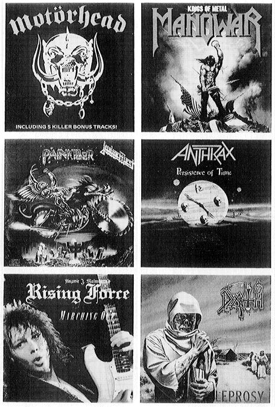

Sonorous metal blowing martial sounds;
At which the universal host upsent
A shout that tore Hell’s concave, and beyond
Frighted the reign of Chaos and old Night.
—Milton, Paradise Lost1
“Heavy metal: pimply, prole, putrid, unchic, unsophisticated, anti-intellectual (but impossibly pretentious), dismal, abysmal, terrible, horrible, and stupid music, barely music at all; death music, dead music, the beaten boogie, the dance of defeat and decay; the huh? sound, the duh sound, . . . music made by slack-jawed, alpaca-haired, bulbous-inseamed imbeciles in jackboots and leather and chrome for slack-jawed, alpaca-haired, downy-mustachioed imbeciles in cheap, too-large T-shirts with pictures of comic-book Armageddon ironed on the front.”2 So heavy metal music is described by Robert Duncan, a rock critic.
Baptist minister Jeff R. Steele is known for his lectures on the adverse effects of rock and roll. Certainly, few of his values are the same as those of Duncan or other rock journalists. But he shares a disgust for heavy metal, judging that it “is sick and repulsive and horrible and dangerous.”3
Dr. Joe Stuessy, a professor of music at the University of Texas at San Antonio, testified about heavy metal before a United States Senate Committee. “Today’s heavy metal music is categorically different from previous forms of popular music. It contains the element of hatred, a meanness of spirit. Its principal themes are . . . extreme violence, extreme rebellion, substance abuse, sexual promiscuity, and perversion and Satanism. I know personally of no form of popular music before which has had as one of its central elements the element of hatred.”4 Professor Stuessy served as a consultant to the religiously oriented Parents Music Resource Center (PMRC). His testimony to the Senate Committee also included this observation: “Martin Luther said, ‘Music is one of the greatest gifts that God has given us; it is divine and therefore Satan is its enemy. For with its aid, many dire temptations are overcome; the devil does not stay where music is.’ We can probably assume that Martin Luther was not familiar with Heavy Metal!”5
In the early 1970s a rock critic characterized the quintessential heavy metal band Black Sabbath as having the “sophistication of four Cro-Magnon hunters who’ve stumbled upon a rock band’s equipment.”6
A journalist in the Musician noted that most people see heavy metal as “a musical moron joke, fodder for frustrated teens and dominion of dim-witted devil-worshippers.”7
A Rolling Stone review of a recent heavy metal album claims that the singer’s “voice rarely drops below a banshee soprano, and the content of the lyrics is a hoot.”8 Eighteen years earlier a Los Angeles Times reviewer described another heavy metal group as having “a complete lack of subtlety, intelligence and originality.”9
Lester Bangs, the only noted rock critic who had anything favorable to say about heavy metal at its inception, writes some years later: “As its detractors have always claimed, heavy-metal rock is nothing more than a bunch of noise; it is not music, it’s distortion—and that is precisely why its adherents find it appealing. Of all contemporary rock, it is the genre most closely identified with violence and aggression, rapine and carnage. Heavy metal orchestrates technological nihilism.”10
An academic scholar who specializes in the history of the devil concluded that “Overt Satanism faded rapidly after the 1970s, but elements of cultural Satanism continued into the 1980s in ‘heavy metal’ rock music with its occasional invocation of the Devil’s name and considerable respect for the Satanic values of cruelty, drugs, ugliness, depression, self-indulgence, violence, noise and confusion, and joylessness.”11
In his social history of rock music, Loyd Grossman referred to the genre of heavy metal as “Downer Rock,” commenting that its “chief exponents were Black Sabbath, a thuggy, atavistic, and philosophically lugubrious British quartet who became quite successful performing songs about paranoia, World War HI, and other whistle-a-happy-tune subjects.”12
Politicians have also passed judgment on the genre. Senator Albert Gore, during Senate hearings on record labeling, asked a witness “Do you agree that there does seem to be a growing trend, at least in the heavy metal area, that emphasizes explicit violence and sex and sado-masochism and the rest?”13
The mass media has joined the chorus of contempt. Newsweek, in 1990, ran the following advertisement for its upcoming issue on youth: “Is being a teenager still something to look forward to? Little kids think teenagers are really cool. But how cool is it to come of age in the age of AIDS, crack and heavy metal?”14
Heavy metal music is a controversial subject that stimulates visceral rather than intellectual reactions in both its partisans and its detractors. Many people hold that heavy metal music, along with drugs and promiscuous sex, proves that some parts of youth culture have gone beyond acceptable limits. To many of its detractors heavy metal embodies a shameless attack on the central values of Western civilization. But to its fans it is the greatest music ever made.
The severity of the denunciations directed at heavy metal and the disagreement exhibited by its two major opponents, the liberal-left rock critics and the religious right, concerning what to denounce are enough to pique a sociologist’s interest. Why should a style of music have occasioned such extravagant rhetoric, not only from members of the lunatic fringe, but also from responsible elements on both sides of the political spectrum? Can a form of music that has attracted millions of fans for more than twenty years be all that dangerous? Does a form of music warrant being placed along with a dread disease (AIDS) and drug abuse? Are the critics of heavy metal really talking about music? If not, what is it that they are talking about?
The broadest purpose of this book is to show how sociology can inform public discussion of heavy metal. This book is not meant to be another voice in the controversy, but an effort to step back and reveal the elusive subject that is at the center of the controversy. In light of public debates over the advisability of censoring heavy metal music, this study is meant to show how heavy metal music is made, used, and transmitted by social groups. Only an objective inquiry can permit rational judgment about the merits of the proposals to limit the freedom of heavy metal’s artists, audiences, and media.
The focus here is on the social dimension of heavy metal, not on the individual bands and personalities that are the usual concerns of almost everyone who writes about the genre. You do not have to be a fan or a detractor of heavy metal to read this book and gain an understanding of how this genre of popular culture is put together. If you have little or no acquaintance with the music, you can listen to some of the “suggested hearings” I list in Appendix A. If you are familiar with heavy metal, you will find that the specific examples that appear in the discussion reinforce and deepen the general analysis. You will also be able to think of other examples that substantiate or perhaps challenge the claims made in the text.
The field that explores the social dimension of forms of cultural expression is called cultural sociology. Generally, cultural sociology investigates the creation, appreciation, and mediation of cultural forms. In the case of heavy metal, that investigation involves artists, audiences, and mediators (those who bring the musicians and audiences together through such “media” as radio, records, and magazines).
Cultural sociology helps to clarify existing conditions that policies are intended to preserve or change. It does not, for example, join the debate over whether heavy metal is good or evil, a legitimate form of entertainment or a threat to youth. It examines how the music exists in a set of social relations. The basic message of cultural sociology can be put in a few words: know something about what you are discussing before you make policy about it.
Cultural sociology does not lend itself to a complete understanding of public debate and policy. It does not provide detailed clarifications of the value choices and ethical principles involved in alternative policies, in the manner of public ethics. It does not describe the dynamics of the policy-making process, in the manner of political science. It is not concerned with the impact of social policy, nor with the formation of new policies. It addresses a more immediate question: What are we making a public issue about?
Sociology of culture contributes to public discourse by exploring the factual assumptions of the parties involved in debate over policy. Most of this study will offer a sociological description of heavy metal. This description has value in itself as a contribution to cultural sociology. But this description also represents the kind of attempt at objectivity that public discourse, at least on this issue, needs the most.
In order to enlighten public discussion, the approach taken here must be comprehensive. No source of data or interpretation that is acknowledged to be part of cultural sociology can be ignored. This study of heavy metal is based on data drawn from a wide variety of sources based on diverse kinds of methods. Among them are participant observation (backstage, in recording studios, at basement rehearsals, on concert lines, in concert audiences, at record stores, on tour buses, etc.); the use of key informants among the musicians, the audience, and those in the media; unstructured interviews and questionnaire research; and nonparticipant field research (observing and counting). Also, the contributions of the scholarly literature and the media concerned with heavy metal have been consulted and integrated into the discussion where appropriate. No practice of cultural sociology is entirely alien to the following study.
The result of applying all these various methods is a description of the structures of heavy metal. Those structures are composed of relations between contrasting meanings and diverse social roles and functions. Heavy metal does not have a single meaning or even a single description. It is a compound of different elements. But it is not simply a hodgepodge. Heavy metal and many of the components that contribute to its making are “bricolages.”
A “bricolage” is a collection of cultural elements.15 It is not like a machine in which each part is specially adapted to contribute to the proper functioning of the whole. A bricolage is much looser than that. Its parts exist for themselves as much as they do for the whole. They are held together not by physical or logical necessity but by interdependence, affinity, analogy, and aesthetic similarity.
The comprehensive descriptions presented here are sociological bricolages.16 They are constructed from the varied stock of data gathered by the many methods mentioned above. These descriptions are not works of artistic expression but attempts to honor the diversity of heavy metal. They can and should be judged for factual accuracy, logical consistency, and comprehensiveness, when those criteria are appropriate. But they should also be judged for their ability to reveal patterns that are generous enough to be faithful to heavy metal’s actual complexity. Heavy metal is itself a bricolage, a loose organization of diverse elements. Only a sociological bricolage can reveal its complexities.
No single description does justice to the richness of the social dimension of heavy metal. Musicians, audiences, and mediators each grasp the whole in different, often contrasting, ways. They give three distinctive perspectives on the music, which cannot be put together into a single view. In the place of a unique view we must depend on a loosely seamed bricolage of viewpoints. As one reads about each participant in heavy metal’s social dimension, one gets a distinctive vision of that whole dimension. These visions supplement each other but maintain their independence from the alternatives.
Heavy metal is a musical genre. Although some of its critics hear it only as noise, it has a code, or set of rules, that allows one to objectively determine whether a song, an album, a band, or a performance should be classified as belonging to the category “heavy metal.” That code is not systematic, but it is sufficiently coherent to demarcate a core of music that is undeniably heavy metal. It also marks off a periphery at which heavy metal blends with other genres of rock music or develops offshoots of itself that violate parts of its code or develop new codes. Those seeking to investigate heavy metal need to be aware of the codes through which competent listeners appreciate the music and must be able to listen to it through those codes.
A genre of music includes at its minimum a code of sonic requirements that music must meet to be included in it. That is, a genre requires a certain sound, which is produced according to conventions of composition, instrumentation, and performance. For some types of music the sonic requirements in themselves define the genre. But most music also incorporates a visual dimension. Finally, some music has words that provide an added dimension of meaning. In the case of heavy metal, the sonic, the visual, and the verbal dimensions all make crucial contributions to the definition of the genre.17
Heavy metal, like other styles of music, was identified as a genre only after it had come into being. As Ronald Byrnside notes, musical styles “generally follow a pattern of formation, crystallization, and decay.”18 During the period of formation, the distinction between the new style and the styles out of which it erupts are still unclear. Later, in the period of crystallization, the style is self-consciously acknowledged. Its audience recognizes it as a distinctive style. But the boundaries of that style are not rigid. They expand, contract, and shift as artists, audiences, and mediators make new initiatives and change their various musical, social, and financial interests.19
To call heavy metal a genre means to acknowledge it as something more than a marketing category. It has a distinctive sound. It also has a stock of visual and verbal meanings that have been attached to it by the artists, audience members, and mediators who construct it.20 Heavy metal has gone through what Byrnside calls the formative and crystallization phases. It has so far resisted decay, in which “the style becomes so familiar and certain things about it become so predictable that both composer and audience begin to lose interest.”21 Resistance to decay, however, does not mean the persistence of exactly the same pattern of meanings.
For a number of reasons, the most important of which is the growth of a subculture identified with the music, heavy metal has persisted far longer than most genres of rock music. It has also broadened. At heavy metal’s peripheries, offshoots have appeared that are not yet independent enough to be called separate genres, and are therefore best called subgenres. The two main subgenres, thrash metal and lite metal, are treated in the following study in terms of their similarities to and differences from the core of heavy metal. Each of these offshoots changes or even breaks the heavy metal code in some ways, but still retains enough of this code to be placed in the same “family” with it.22
The family that includes heavy, lite, and thrash metal is called here simply “metal.” When the term “metal” is used in the following discussion it normally refers to the loose bricolage composed of the genre of heavy metal and its subgenres. “Heavy metal” is sometimes called “classic” metal when references are made to the period after the eruption of its subgenres. Mapping the complexities of metal is part of this study, but that mapping is always done from a center, the core of the heavy metal genre.
The core of heavy metal—its sonic, visual, and verbal code—is defined in terms of the genre’s period of crystallization in the mid- to late 1970s. From that period one can look back to the formative phase, identifying precursors and initiators, and also look forward to the phase of fragmentation (not yet decay), in which subgenres erupted. In the crystallization period heavy metal gained a core audience and became identified with a distinctive youth culture. The core of the heavy metal genre and its subcultural audience is the center of gravity of this study.
The social dimension of heavy metal is a transaction between the artists, audiences, and mediators that enable the genre to exist. A transaction is a set of exchanges between participants. Each participant does something distinctive to contribute to the transaction and receives something in return from the other participants. Each one has its own independent interests and perspectives on the transaction: artists create and perform the music, audiences appreciate the music and make it the basis of a youth subculture, and mediators bring artists and audience together, usually for a price.
There is no overarching perspective on the transaction as a whole, only the viewpoints of the actors who put it together.23 Once one has read chapter 2 of this work, in which the genre of heavy metal music is described, you could, in principle, read the following three chapters on the different participants in the transaction in any order you choose. All participants—musicians, audience, and mediators—are equally essential to heavy metal. No one of these three perspectives is more fundamental than the other two. Each one tells its own story of heavy metal. The order in which to tell these stories is somewhat arbitrary, but here the artist’s perspective is presented in chapter 3, the audience’s perspective in chapter 4, and the mediator’s perspective in chapter 5.
The sequence of perspectives is meant to make sense in terms of how culture is socially constructed. One can imagine someone creating a piece of music that is never performed before an audience, but one cannot imagine an audience without any music to which to listen. Similarly, one can imagine artists and audiences getting together to perform and listen without benefit of mediators, such as record companies and concert promoters, but one cannot imagine such mediators without preexisting artists and audiences for them to serve.
The sequence artist-audience-mediator gives priority to culture over structure: an artist creates music for an audience and is connected with that audience through the offices of mediators. The accent is on the artists who create within the cultural form. But the transaction that constitutes heavy metal can be conceived in an alternative way, from a structural viewpoint. Here the sequence runs from mediator to audience to artist: the mediators deliver the artists to the audience in return for payment. In this view the artists mediate between the mediators and the audience.24 The structural version of the transaction is used to describe a heavy metal concert in chapter 6. The concert is a special event in which all of the participants in the transaction are brought together in a common context of space and time, producing the closest approximation there is to a community of heavy metal.
Once the three perspectives on heavy metal have been presented and then have been adapted to the concert, the description of the social construction of heavy metal is complete. Then it is time to compare the sociological description of heavy metal with the descriptions of it in public debate. In Chapter 7 that task will be undertaken. The study ends with some reflections on why heavy metal has provoked such hostility from both the left and the right ends of the political spectrum.
Now we can begin at the beginning, before there was a heavy metal genre for the musicians, audience, and mediators to construct. Heavy metal erupted with new features that gradually distinguished it from the music present at its time of origin. But it had influences, precursors, and prototypes. Heavy metal crystallized, as Byrnside says, out of a formative phase.
